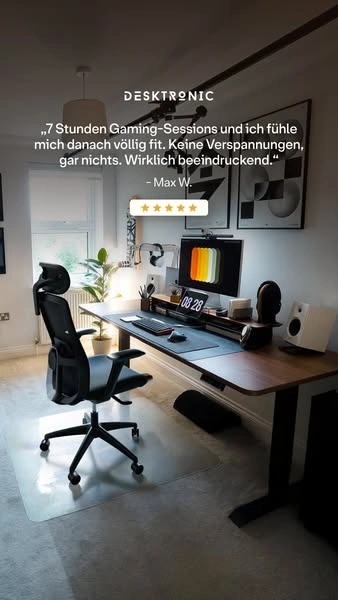

DESK-META-980177638167248

DESK-META-980177638167248DESK-META-980177638167248 · Desktronic · Meta · 广告中的静态图片
品牌 / 平台：Desktronic / Meta。A类真实广告。图像性质：广告中的静态图片。范围：桌椅使用邻近场景（第三方广告，未单独确认桌型）。
图片像素：338×600，比例169:300。文件：01_Original_Competitor_Ads/Desktronic/Meta/DESK-META-980177638167248.webp。
原广告来源。广告记录：DESK-MAD-980177638167248。日期证据：德国公开列表的起止日期与研究窗口相交。首次：2026-06-19；最后：2026-09-28。首次/最后边界不表示连续投放。
视觉描述
Desktronic 的Home Office素材，斜后方侧视，全景。主产品包围框占画面面积粗估约15–35%，主体在右下，焦点为有使用痕迹的桌面与椅子。画面为深木、黑、白配色，窗侧自然光及屏幕光。桌面设备、椅子、墙面装饰；无人。文字位置：顶部用户陈述与星级。主要表达真实使用、桌椅搭配。
背景复杂度：中。留白：按原图文字区与产品区的分工理解，不逐像素复刻。主体包围框面积的人工粗估区间，含桌脚间空白，不是像素测量。
人物：无完整使用人物。交互：由桌面物件、桌高或部位关系表达使用；不从静帧推断运动性能。真实感判断：生活物件与空间关系可供参考；是否真实摄影/渲染未做鉴定。
创意类型：真实生活方式型、产品场景组合型。卖点：真实使用、桌椅搭配。
创意逻辑与需求
以不完美的真实工作区建立可信度。这是第三方广告主素材；评价、星级和引号不能虚构或复制。
购买需求：真实使用、桌椅搭配相关的选择与使用疑问；这是需求匹配推断，不是广告转化证明。
可借鉴与变化
参考什么：原图的斜后方侧视、全景与“有使用痕迹的桌面与椅子”的关系。以不完美的真实工作区建立可信度。这是第三方广告主素材；评价、星级和引号不能虚构或复制。
如何改变：把日用物件变成有因果关系的具体任务：成人晚间进修，纸质教材、笔记本和单屏形成阅读与输入两区；从书架边斜拍。改变职业任务、物件组合和机位，装饰物不再承担主要叙事。
匹配产品：Economy Solid 白色 140×70 cm; Dual Ultra X 白色 180×80 cm。
不照搬：Logo、品牌配色系统、评价/星级、获奖/认证、价格/保证、专有结构与未经核验功能；不得把竞品图片直接改标发布。
文字说明：标题/正文合计短摘录最多25词；纯图文内容见原图。未读取的标题/正文不补写。
图像质量说明
保存可访问的最长边600像素版本；同一素材无缩放版本返回403，未继续重试或插值放大。